对象被判定为垃圾的标准
- 没有被其他对象引用
判定对象是否为垃圾的算法
引用计数算法
判断对象的引用数量 - 通过判断对象的引用数量来决定对象是否可以被回收
- 每个对象实例都有一个引用计数器，被引用则+1，完成引用则-1
- 任何引用计数为0的对象实例可以被当作垃圾收集
优点：
- 执行效率高，程序执行受影响较小
缺点：
- 无法检测出循环引用的情况，导致内存泄漏
下列代码就是循环引用对方对象
1 | public class MyObject { |
1 | public class ReferenceCounterProblem { |
可达性分析算法
通过判断对象的引用链是否可达来决定对象是否可以被回收
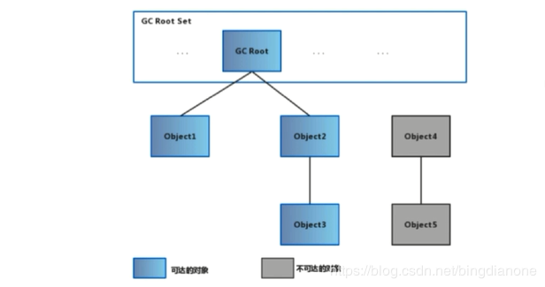
- 可以作为GC Root的对象
- 虚拟机栈中引用的对象（栈帧中的本地变量表）
- 方法区中的常量引用的对象
- 方法区中的类静态属性引用的对象
- 本地方法栈中JNI（Native方法）的引用对象
- 活跃线程的引用对象
谈谈你了解的垃圾回收算法
标记 - 清除算法（Mark and Sweep）
- 标记：从根集合进行扫描，对存活的对象进行标记
- 清除：对堆内存从头到尾进行线性遍历，回收不可达对象内存
标记 - 清除算法会产生不连续的内存碎片，即照成碎片化；在有新的较大对象进来时，无法找到连续的空间，只能被迫提前促发另一次垃圾清除操作。
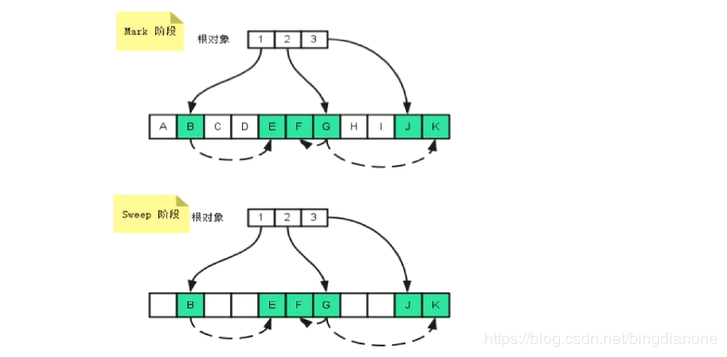
复制算法
- 分为对象面和空闲面
- 对象在对象面上创建
- 存活的对象被从对象面复制到空闲面
- 将对象面所有对象内存清除
其他
- 解决碎片化问题
- 顺序分配内存，简单高效
- 适用于对象存活率低的场景
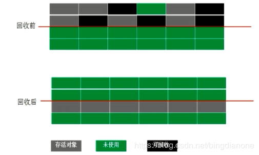标记 - 整理算法（Compacting）
- 标记：从根集合进行扫描，对存活的对象进行标记
- 清除：移动所有存活的对象，且按照内存地址次序依次排列，然后将末端内存地址以后的内存全部回收
其他
避免内存的不连续性
不用设置两块内存互换
适用于存活率高的场景
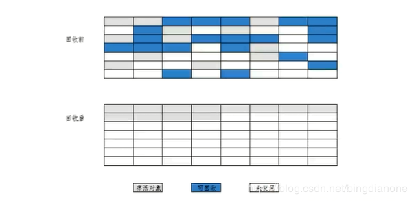分代收集算法（Generational Collector）
垃圾回收算法的组合拳
按照对象生命周期的不同划分区域以采用不同的垃圾回收算法
目的：提高JVM的垃圾回收效率
jdk6，jdk7
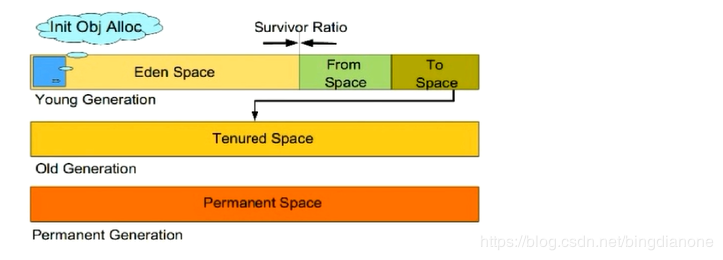jdk8+

老年代存活率高用标记清除或标记整理，年轻代存活率低用复制分代收集的GC分类
- Minor GC 发生在年轻代中的垃圾收集动作，采用的时复制算法，执行频率高；年轻代java对象出生的地方，java对象的申请内存以及存放都是在年轻代；java中大部分对象都不会长久存活，新生代是垃圾收集的频繁区域。
- Eden区满了会促发Minor GC
- Full GC 发生在老年代，比Minor GC慢，但执行频率低；
- Minor GC 发生在年轻代中的垃圾收集动作，采用的时复制算法，执行频率高；年轻代java对象出生的地方，java对象的申请内存以及存放都是在年轻代；java中大部分对象都不会长久存活，新生代是垃圾收集的频繁区域。
年轻代：尽可能快速地收集掉那些生命周期短的对象
- Eden区 ：Eden区代表起源，对象刚被创建的出生地
- 两个Survivor区：from区和to区（不确定区分哪个是from和to）
年轻代垃圾回收的过程演示
假定Eden区最多可以保存四个对象，每个Survivor区可以保存3个对象。
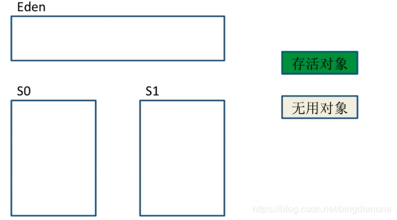
1、对象出生会挤满Eden区，促发Minor GC；将存活对象放入from区
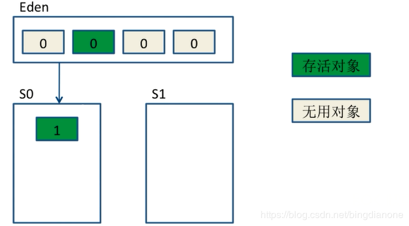
2、清理所有使用过的Eden区，将存活对象的年龄设置为1
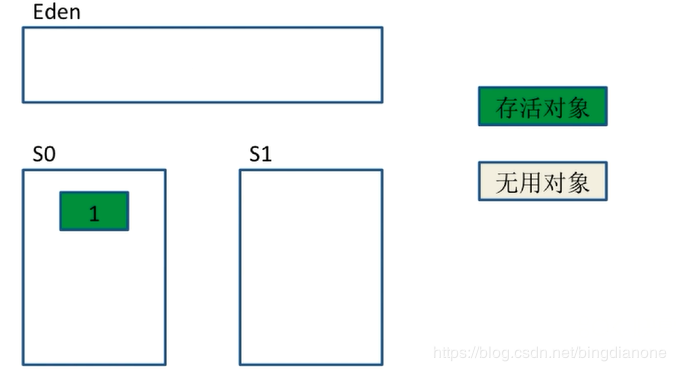
3、假设Eden区再次被填满
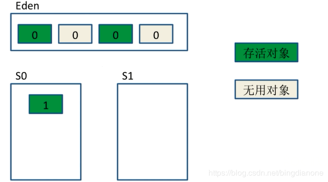
4、促发Minor GC；将存活对象（Eden和S0的存活对象）放入from区。S1变成了from，S0变成了to。同时对这些对象年龄加1。
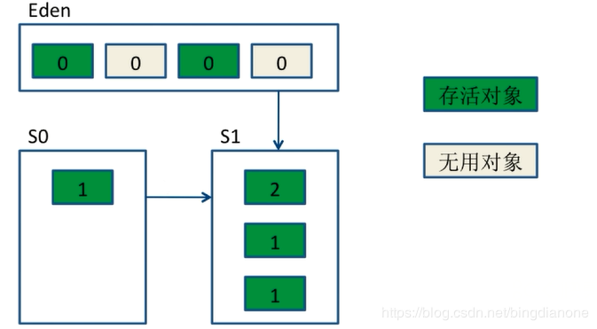
5、之后Eden和S0都会被清空
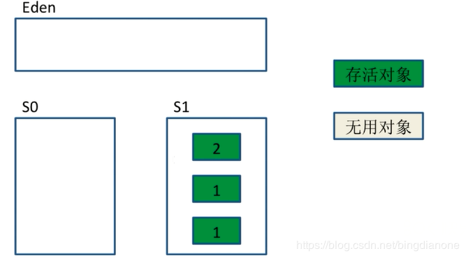
6、假设Eden区第三次被填满，此时S1里有一个对象时无用的。
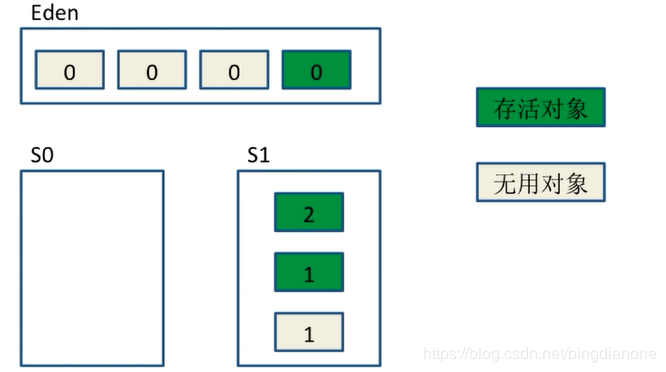
7、存活对象将会被拷贝到S0中，并且对这些对象年龄加1。
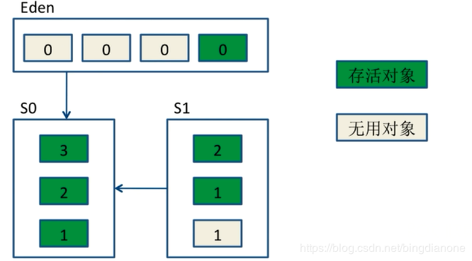
8、S1和Eden再次被清空；周而复始，当对象的年龄达到15（参数-XX:MaxTenuringThreshold默认为15），会被放入老年代；但是也不是绝对的，当出现一个新的很大的对象，Eden和S区都装不下的时候，会被直接送入老年代
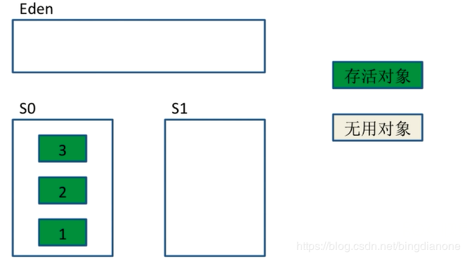
对象如何晋升到老年代
- 经历一定Minor次数（15次）依然存活的对象
- Survivor区中存放不下的对象
- 新生成的大对象（-XX:+PretenuerSizeThreshold）
常用调优参数
- -XX:SurvivorRatio:Eden和Survivor的比值，默认8：1
- -XX:NewRatio:老年代和年轻代内存大小的比例
- -XX:MaxTenuringThreshold:对象从年轻代晋升到老年代经过GC的最大阈值
老年代
存放生命周期较长的对象
- 标记-清理算法
- 标记-整理算法
Stop-the-World
- JVM由于要执行GC而停止了应用程序的执行
- 任何一种GC算法中都会发生
- 多数GC优化通过减少Stop-the-world发生的时间来提高程序性能
Safepoint
- 分析过程中对象引用关系不会发生变化的点
- 产生Safepoint的地方：方法调用；循环跳转；异常跳转等
- 安全点数量得适中
常见得垃圾收集器
JVM的运行模式 - Server 服务端启动较慢，启动之后的长期运行中，程序运行快
- Client 客户端启动较快，启动之后的长期运行中，程序运行慢
- 执行java -version就可以查看运行模式
垃圾收集器之间的联系
图中连线是表示兼容，可以一块使用。
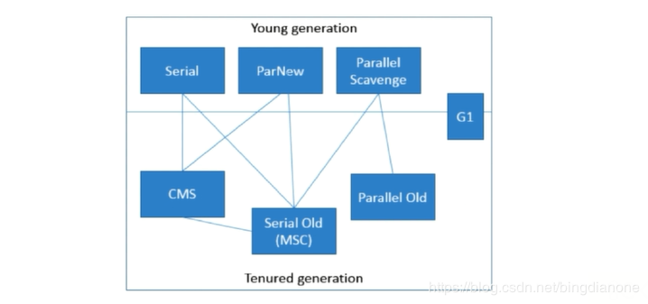年轻代常见的垃圾收集器
Serial收集器（-XX:+UseSerialGC，复制算法）
- 单线程收集，进行垃圾收集时，必须暂停所有工作线程
- 简单高效，Client模式下默认得年轻代收集器
可以在几十~100毫秒收集一两百兆的垃圾
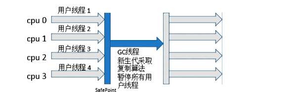
ParNew收集器（-XX：+UseParNewGC，复制算法）
- 多线程收集，其余的行为、特点和Serial收集器一样
- 单核执行效率不如Serial，在多核下执行才有优势
默认开启的线程数与CPU数量相同
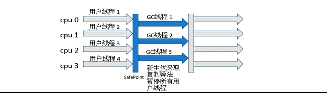
Parallel Scavenge收集器（-XX：+UseParallelGC，复制算法）
- 吞吐量=运行用户代码时间/（运行用户代码时间+垃圾收集时间）
- 比起关注用户线程停顿时间，更关注系统的吞吐量
- 在多核下执行才有优势，Server模式下默认的年轻代收集器
在启动中加入图中的参数会把调优交给虚拟机去完成
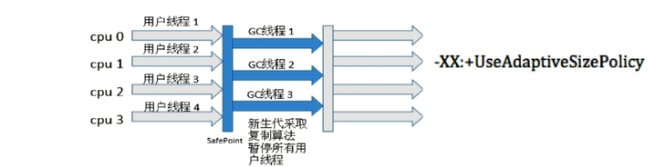
老年代常见的垃圾收集器
Serial Old收集器（-XX：+UseSerialOldGC，标记-整理算法）
- 单线程收集，进行垃圾收集时，必须暂停所有工作线程
- 简单高效，Client模式下默认的老年代收集器
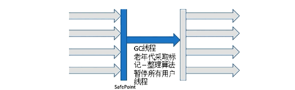Parallel Old收集器（-XX：+UseParallelOldGC，标记-整理算法）jdk6之后
- 多线程，吞吐量优先
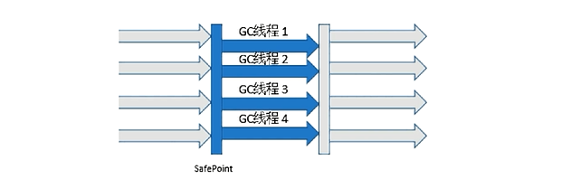CMS收集器（-XX：+UseConcMarkSweepGC，标记-清除算法）
- 初始标记：stop-the-world
- 并发标记：并发追溯标记，程序不会停顿
- 并发预清理：查找执行并发标记阶段从年轻代晋升到老年代的对象
- 重新标记：暂停虚拟机，扫描CMS堆中的剩余对象
- 并发清理：清理垃圾对象，程序不会停顿
- 并发重置：重置CMS收集器的数据结构
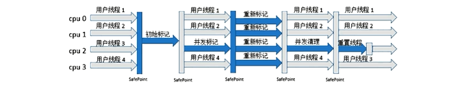G1收集器（-XX：+UseG1GC，复制+标记-整理算法）
Garbage First收集器的优点： - 并行和并发
- 分代收集
- 空间整合
- 可预测的停顿
其他
- 将整个Java堆内存划分成多个大小相等的Region
- 年轻代和老年代不再物理隔离

GC相关的面试题
Object的finalize()方法的作用是否与C++的析构函数作用相同
- 与C++的析构函数不同，析构函数调用确定，而它的是不确定的
- 将未被引用的对象放置于F-Queue队列
- 方法执行随时可能会被终止
- 给予对象最后一次重生的机会
以下程序说明不建议使用finalize()方法
1 | import java.lang.ref.ReferenceQueue; |
Java中的强引用、软引用、弱引用、虚引用有什么作用
- 强引用（Strong Reference）
- 最普遍的引用：Object obj=new Object()
- 抛出OutOfMemoryError终止程序也不会回收具有强引用的对象
- 通过将对象设置为null来弱化引用，使其被回收
- 软引用（Soft Reference）
- 对象处在有用但非必须的状态
- 只有当内存空间不足时，GC会回收该引用的对象的内存
- 可以用来实现高速缓存
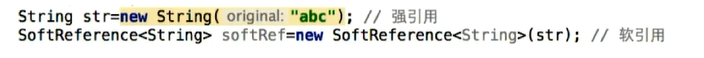
- 弱引用（Weak Reference）
- 非必须的对象，比软引用更弱一些
- GC时会被回收
- 被回收的概率也不大，因为GC线程优先级比较低
- 适用于引用偶尔被使用且不影响垃圾收集的对象
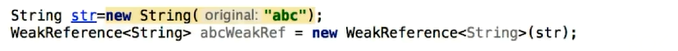
- 虚引用（Phantom Reference）
- 不会决定对象的生命周期
- 任何时候都可能被垃圾收集器回收
- 跟踪对象被垃圾收集器回收的活动，起哨兵作用
- 必须和引用队列ReferenceQueue联合使用
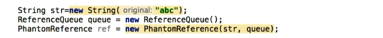
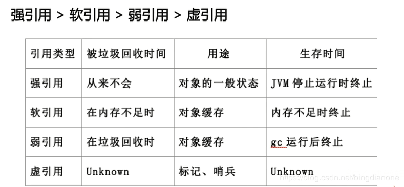
类层次结构
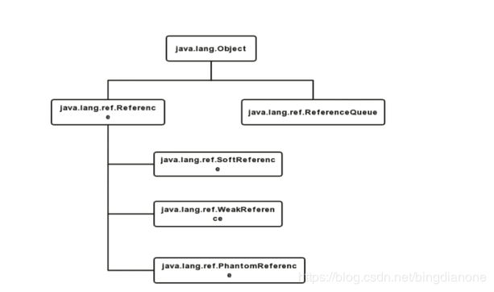
引用队列（ReferenceQueue）
- 无实际存储结构，存储逻辑依赖于内部节点之间的关系来表达
- 存储关联的且被GC的软引用，弱引用以及虚引用